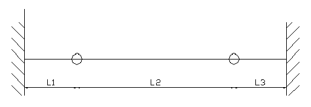
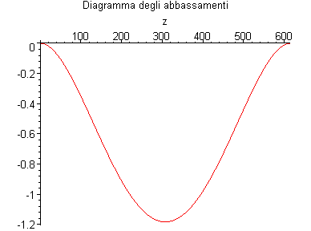
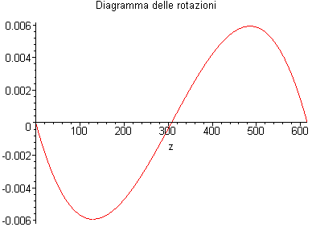
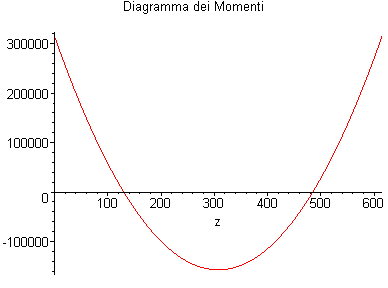
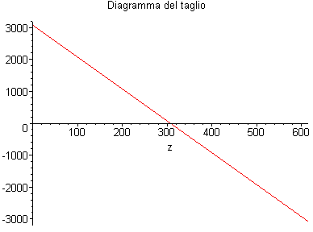
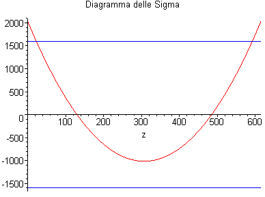
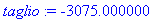

Trave Continua Incastrata-Incernierata-Incernierata-Incastrata
G.Piluso - Febbraio 2004
Si assume il segno positivo per:
1 - gli spostamenti verso il basso;
2 - le forze concentrate verso il basso;
3 - il caricodistribuito verso il basso;
4 - i momenti concentrati antiorari.
5 - Forze Concentrate = F*Dirac(z-valore ascissa)
6 - Coppie Concentrate = M*Dirac(1, z-valore ascissa)
7 - Carichi Distribuiti Parziali = q*Heaviside(z-valore ascissa)
8 - Carichi Distribuiti = q

Inizializzazione
>
restart:
with(plots):
with(plottools):
#with(DEtools):
Dati di Input
>
# Numero di campate
NCampate:=3:
#Sigma ammissibile
Sigma_amm:=1600.0:
# Momento d'inerzia e modulo di resistenza della trave
J:=1500.0:
Wx:=155.0:
# Modulo di elasticità del materiale
E:=2100000.0:
# Carico distribuito
q:=10.0:
# Lunghezze delle campate
L[1]:=130.0:
L[2]:=355.0:
L[3]:=130.0:
# Tipo di carico per ogni campata
carico[1]:={q}:
carico[2]:={q}:
carico[3]:={q}:
# Carichi e momenti concentrati agenti rispettivamente all'inizio ed alla fine di ogni campata oppure dove c'è il vincolo
P[1]:=0.0: M[1]:=0.0:
P[2]:=0.0: M[2]:=0.0:
P[3]:=0.0: M[3]:=0.0:
P[4]:=0.0: M[4]:=0.0:
Un Calcolo Preparatorio...
>
LL[0]:=0.0:
for i from 1 to NCampate do
LL[i]:=LL[i-1]+L[i];
end do:
# Lunghezza totale trave
Ltot:=LL[NCampate]:
Equazioni della Linea Elastica su Suolo alla Winkler
>
unassign('i');
ode[1]:=E*J*diff(v[1](z),z$4)=sum(carico[1][i],i=1..nops(carico[1])):
ode[2]:=E*J*diff(v[2](z),z$4)=sum(carico[2][i],i=1..nops(carico[2])):
ode[3]:=E*J*diff(v[3](z),z$4)=sum(carico[3][i],i=1..nops(carico[3])):
Condizioni al Contorno
>
ic1:={
v[1](0)=0.0,
D(v[1])(0)=0.0,
v[1](L[1])=v[2](0),
E*J*D(D(v[1]))(L[1])=-M[2],
E*J*D(D(v[2]))(0)=M[2],
E*J*D(D(D(v[1])))(L[1])-E*J*D(D(D(v[2])))(0)=-P[2],
v[2](L[2])=v[3](0),
E*J*D(D(v[2]))(L[2])=-M[3],
E*J*D(D(v[3]))(0)=M[3],
E*J*D(D(D(v[2])))(L[2])-E*J*D(D(D(v[3])))(0)=-P[3],
v[3](L[3])=0.0,
D(v[3])(L[3])=0.0
}:
Risoluzione dell'Equazione Differenziale
>
st=time():
time() - st:
sol1:=dsolve({ode[1],ode[2],ode[3]} union ic1,{v[1](z),v[2](z),v[3](z)}):
time() - st:
Traccia la trave
>
p[0]:=plot(0,z=0..Ltot):
Traccia il Diagramma degli Abbassamenti
>
for i from 1 to NCampate do
eval(v[i](z),sol1):
v[i]:=unapply(%,z):
abb[i]:=-v[i](z):
p[i]:=plot(abb[i],z=0..L[i]):
end do:
for i from 2 to NCampate do
p[i]:=translate(p[i],LL[i-1],0):
end do:
display([p[0],p[1],p[2],p[3]],title="Diagramma degli abbassamenti");

Traccia il Diagramma delle Rotazioni
>
for i from 1 to NCampate do
phi[i]:=diff(-v[i](z),z):
p_phi[i]:=plot(phi[i],z=0..L[i]):
end do:
for i from 2 to NCampate do
p_phi[i]:=translate(p_phi[i],LL[i-1],0):
end do:
display([p[0],p_phi[1],p_phi[2],p_phi[3]],title="Diagramma delle rotazioni");

Traccia il Diagramma dei Momenti
>
for i from 1 to NCampate do
Mom[i]:=E*J*diff(v[i](z),z,z):
p_Mom[i]:=plot(Mom[i],z=0..L[i]):
end do:
for i from 2 to NCampate do
p_Mom[i]:=translate(p_Mom[i],LL[i-1],0):
end do:
display([p[0],p_Mom[1],p_Mom[2],p_Mom[3]],title="Diagramma dei Momenti");

Traccia il Diagramma del Taglio
>
for i from 1 to NCampate do
T[i]:=-E*J*diff(v[i](z),z,z,z):
p_T[i]:=plot(T[i],z=0..L[i]):
end do:
for i from 2 to NCampate do
p_T[i]:=translate(p_T[i],LL[i-1],0):
end do:
display([p[0],p_T[1],p_T[2],p_T[3]],title="Diagramma del taglio");

Traccia il Diagramma delle Sigma
>
Sig[0]:=plot(Sigma_amm,z=0..Ltot,color=blue):
Sig[1]:=plot(-Sigma_amm,z=0..Ltot,color=blue):
for i from 1 to NCampate do
Sigma[i]:=Mom[i]/Wx:
p_S[i]:=plot(Sigma[i],z=0..L[i]):
end do:
for i from 2 to NCampate do
p_S[i]:=translate(p_S[i],LL[i-1],0):
end do:
display([p[0],Sig[0],Sig[1],p_S[1],p_S[2],p_S[3]],title="Diagramma delle Sigma");

Query
>
campata:=1;
ascissa:=0.0;
abbassamento:=evalf(v[campata](ascissa));
rotazione:=evalf(subs(z=ascissa,diff(v[campata](z),z)));
momento:=evalf(subs(z=ascissa,E*J*diff(v[campata](z),z$2)));
taglio:=evalf(subs(z=ascissa,E*J*diff(v[campata](z),z$3)));
sigma:=evalf(momento/Wx);

